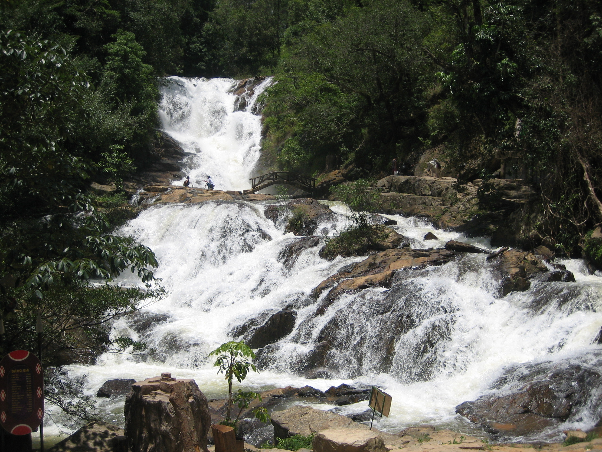
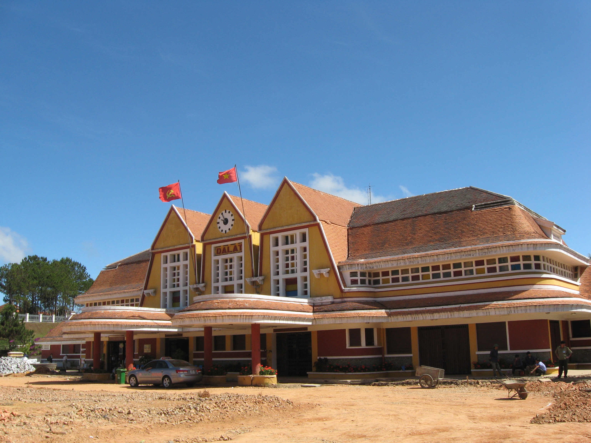
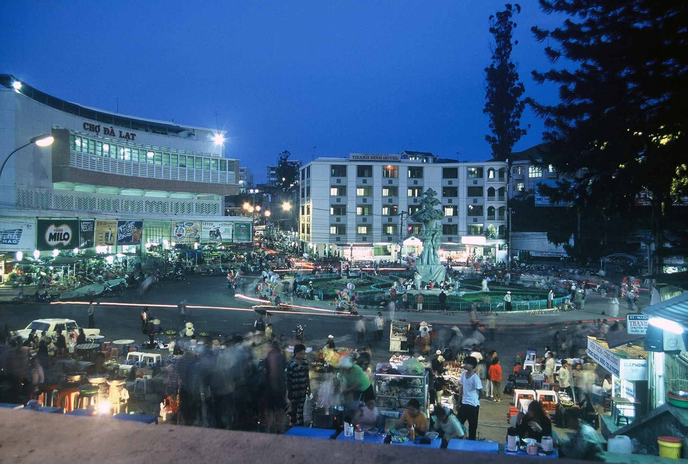
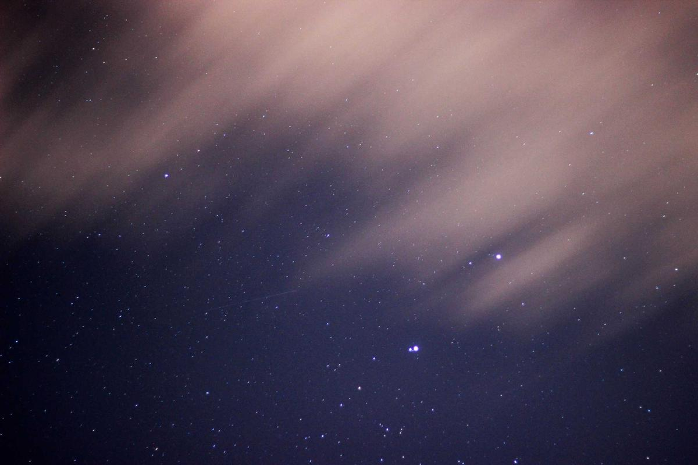

Nam Ban
Thác Voi
Điểm tự nhiên nổi bật, rất quen thuộc trong các tuyến du lịch quanh Đà Lạt.
Trang vùng riêng cho Lâm Hà nhấn mạnh các điểm ven Đà Lạt như Thác Voi, Chùa Linh Ẩn, Mê Linh Coffee và làng hoa, phù hợp cho nội dung nghỉ dưỡng và săn mây.
Nhóm này giúp trang Lâm Hà có đủ yếu tố thiên nhiên, tâm linh và trải nghiệm nông nghiệp.

Điểm tự nhiên nổi bật, rất quen thuộc trong các tuyến du lịch quanh Đà Lạt.

Không gian tâm linh và khung cảnh yên tĩnh giúp trang có thêm lớp nội dung.

Điểm cà phê nổi tiếng, phù hợp ảnh view đồi và trải nghiệm ngắm cảnh.

Thêm yếu tố nông nghiệp và màu sắc cho nội dung vùng ven Đà Lạt.
Khung cảnh buổi sáng rất hợp cho ảnh và bài viết trải nghiệm chậm.
Hình ảnh cao nguyên rất dễ triển khai thành bài điểm đến nhẹ nhàng.
Khung tuyến phù hợp để nối với Đà Lạt hoặc Đức Trọng trong cùng chuyến đi.
Nội dung ngắn gọn để người xem dễ chuẩn bị hơn.
Sáng sớm rất hợp để đi cà phê view cao và săn mây. Trưa nắng mạnh nên ưu tiên nghỉ hoặc đổi tuyến trong nhà.
Lâm Hà rất hợp làm điểm nối giữa Đà Lạt và Đức Trọng, nên ghép tuyến theo cụm để tiết kiệm thời gian.
Trang này có thể mở rộng thêm cho thác, chùa, quán cà phê và các làng hoa khi bạn thay ảnh thật.